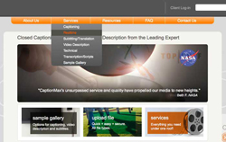
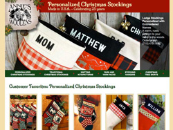
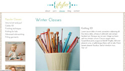
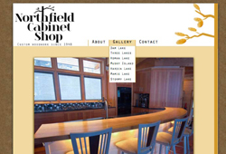
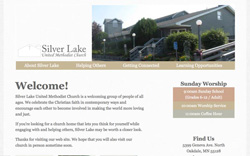
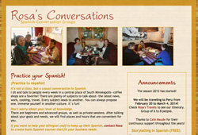
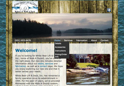

Hi, there!
I'm a freelance web designer/developer living Saint Paul, MN and this is my portfolio site. I love the excitement of creating designs from scratch and the challenge of making those designs come to life through code. These are a few of my recent projects. Thanks for stopping by.
CaptionMax
Updated existing site for a local media accessibility company, with a focus on clean navigation, improved functionality and better accessibility.
Skills: Graphic design, HTML, CSS, Javascript, W3C accessibility.
Annie's Woolens
Redesigned and develped existing home page for an ecommerce website with a focus on SEO and user experience.
Skills: Graphic design, HTML, CSS, Javascript.
Phyber
Unpublished site experimenting with PHP, database sytems and responsive design.
Skills: Visual design, information architecture, responsive design, HTML, CSS, Javascript, jQuery, PHP, CMS/MVC.
Northfield Cabinet Shop
Designed and developed a portfolio site for a custom cabinetry business in northern Wisconsin.
Skills: Logo and graphic design, information architecture, HTML, CSS, Javascript, jQuery mobile, PHP.
Silver Lake United Methodist Church
Redesigned and develop existing church website and created an online registration system for their Vacation Bible School.
Skills: Graphic and responsive design, information architecture, HTML, CSS, Javascript, jQuery, PHP.
Rosa's Conversations
Designed and developed a simple, single-page website for a Spanish conversation group.
Skills: Graphic design, HTML, CSS.
White Bear
Lift & Dock

Redesigned and developed existing website for local dock building and installation company.
Skills: Graphic design, information architecture, HTML, CSS, Javascript, PHP.
A bit about me.
Web design/development is my passion. It fulfills and challenges me in ways I never expected and adds depth and dimension to my creative experience.
When I'm not obsessing about web stuff, I like to knit, write letters, attend concerts, run, browse thrift stores, cross stuff off "to-do" lists and perfect my hummus recipe. Holy Land, how do you do it?!